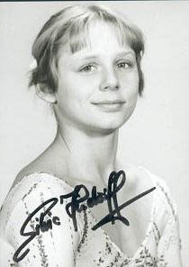

Silvia Hindorff (GDR)

Medal Total
Olympic Games: 1 Bronze
World Championships: 2 Bronze
Silvia was born on June 27, 1961, in Sebnitz and began gymnastics in nearby Dresden. In 1975 , she won beam at the GDR Spartakiade and transferred to SC Leipzig, where she was coached by Helmut Gerschau. Silvia invented a release move on the uneven bars (free hip to reverse hecht) that bears her name. The Hindorff is still considered a very difficult element more than 40 years after its invention. After retiring, she worked as a coach in her club, and later as a psysiotherapist. Her son, Sven Hafemeister, was a member of the German national team in Greco-Roman wrestling and is a graduate of Columbia University, where he was a member of the University's wrestling team.
Competition Results
1975
Jr. GDR Championsips: 1st B
Jr. GDR-POL Dual Meet: 1st Team, 6th AA, 3rd UB
1976
GDR Junior Test Meet: 4th AA
1977
GDR Championships: 3rd AA, 2nd FX 3rd UB
Ontario Cup: 4th AA
SUI-GDR Dual Meet: 1st Team, 4th AA
1978
Champions All: 3rd AA
DTV Cup: 2nd AA
GDR Championships: 2nd AA, 1st UB, 1st FX, 2nd V, 2nd B
Moscow News: 5th AA
Riga International: 3rd AA
USSR-GDR Dual Meet: 2nd Team, 4th AA
World Championships: 3rd Team, 11th AA
1979
Chunichi Cup: 2nd AA
Cottbus International: 2nd AA
GDR-NOR-SWE Tri-Meet: 1st Team, 2nd AA
World Championships: 3rd Team
1980
GDR Championships: 6th AA
GDR-HUN Dual Meet: 1st Team, 5th AA
GDR-NOR-SWE Tri-Meet: 1st Team, 2nd AA
Olympics: 3rd Team
This page was created on March 16,
2004 and was last updated on November 21, 2020.
© Gymn Forum